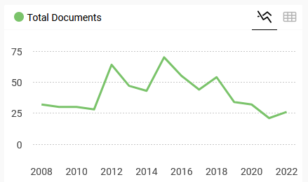
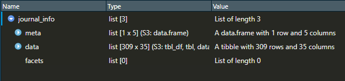

![]()
library(tidyverse)
library(rcrossref)This is the second tutorial/blog exploring some of text-mining/web-scraping methods used on the preprint (The Strain on Scientific Publishing). Head over to Text-mining PLOS articles using R to read the first instance. Today, I will be focusing on Taylor & Francis (T&F)
To some extent, Taylor & Francis allows web scraping their website. To do so you have to be a subscriber to their content, have a non-commercial purpose and send a request. This can take some time, and, in the meantime, any web scraping attempts will return an Error 403 (access forbidden). Fortunately, editorial times of scientific articles from T&F are available on Crossref, and their API can be accessed with R using the package rcrossref.
Step 1: Be polite
rcrossref encourages their users to identify themselves in every query. This is a straight forward process that is well documented here:
After restarting your R session, is time to load all necessary libraries
Step 2: Choosing a journal
rcrossref is going to need a ISSN number to go fetch data. This number is usually available in the journal description page. For this example I´m going to choose the journal Plant Ecology & Diversity. The ISSNs (Print and online version) can be found on its Journal Information page: 1755-0874 & 1755-1668.
To get a hint of what we might find using Crossref data on this journal we can take a peak in Scimago. If you type in and search the journal name or the ISSNs there is some useful information. In particular, the total number of documents is of interest. The larger the number of available documents is, the longer obtaining the data from rcrossref will take (and it can get tedious with LARGE requests).

Step 3: Go fetch!
Let´s build now the data request using R code using the rcrossref function cr_works(). I´m going to use the online ISSN (1755-1668) and select only publications published in 2015 and after. If you wish to obtain data from all publications just drop from_pub_date="2015-01-01 from the code below. Additionally, we set the parameter cursor to not have a limit in number of articles by just adding an unreasonable high number. For more information on how rcrossref and cr_works() can be used head to their documentation page here.
journal_info<-cr_works(filter=c(issn="1755-1668",from_pub_date="2015-01-01"),cursor = "*",cursor_max = 500000)Once the code is running, it might take some minutes for the data to come back. When finished, the object journal_info will be a large list with 3 elements. Let´s have a look to what is inside this object on Step 4.

Step4: Unboxing “journal_info”
Now that we have rcrossref output (journal_info), lets have a look to the elements within. The first element is meta.
journal_info$meta[1:4] total_results search_terms start_index items_per_page
1 309 NA 0 20This is a data frame incicating we have obtained all the Crossref data available for 309 scientific publications.
This information is contained in the element data
head(journal_info$data,10)# A tibble: 10 × 35
alternative.id container.title created deposited published.print
<chr> <chr> <chr> <chr> <chr>
1 10.1080/17550874.2018.1496… Plant Ecology … 2018-0… 2020-09-… 2018-05-04
2 10.1080/17550874.2019.1641… Plant Ecology … 2019-0… 2020-08-… 2019-09-03
3 10.1080/17550874.2017.1287… Plant Ecology … 2017-0… 2022-07-… 2017-01-02
4 10.1080/17550874.2018.1503… Plant Ecology … 2018-0… 2020-09-… 2018-03-04
5 10.1080/17550874.2019.1709… Plant Ecology … 2020-0… 2020-03-… 2020-01-02
6 10.1080/17550874.2019.1610… Plant Ecology … 2019-0… 2022-09-… 2019-03-04
7 10.1080/17550874.2018.1507… Plant Ecology … 2018-0… 2020-09-… 2018-05-04
8 10.1080/17550874.2019.1593… Plant Ecology … 2019-0… 2020-12-… 2019-03-04
9 10.1080/17550874.2015.1049… Plant Ecology … 2015-0… 2016-12-… 2015-07-04
10 10.1080/17550874.2020.1846… Plant Ecology … 2020-1… 2021-08-… 2020-11-01
# ℹ 30 more variables: published.online <chr>, doi <chr>, indexed <chr>,
# issn <chr>, issue <chr>, issued <chr>, member <chr>, page <chr>,
# prefix <chr>, publisher <chr>, score <chr>, source <chr>,
# reference.count <chr>, references.count <chr>,
# is.referenced.by.count <chr>, subject <chr>, title <chr>, type <chr>,
# update.policy <chr>, url <chr>, volume <chr>, language <chr>,
# short.container.title <chr>, assertion <list>, author <list>, …For this journal, this element is a data frame of 35 columns. Notice some of the columns (e.g. assertion) are also data frames (inception). Have a look to what information each column has to offer. Where is the editorial data we are looking for? Well, lets take a peak to the values within the tables of the column assertion in row number 1
journal_info$data$assertion[1][[1]]
# A tibble: 5 × 7
value order name label URL group.name group.label
<chr> <int> <chr> <chr> <chr> <chr> <chr>
1 The publishing and review poli… 1 peer… Peer… <NA> <NA> <NA>
2 http://www.tandfonline.com/act… 2 aims… Aim … http… <NA> <NA>
3 2018-01-13 0 rece… Rece… <NA> publicati… Publicatio…
4 2018-06-30 2 acce… Acce… <NA> publicati… Publicatio…
5 2018-07-19 3 publ… Publ… <NA> publicati… Publicatio…There we go. The date values for editorial times are “hidden” in this table. Let´s clean the data to show this better
received_date <- journal_info$data$assertion[1] %>%
as.data.frame()%>%
filter(name=="received")%>%
select(value)%>%
.[[1]]
accepted_date <- journal_info$data$assertion[1] %>%
as.data.frame()%>%
filter(name=="accepted")%>%
select(value)%>%
.[[1]]
received_date[1] "2018-01-13"accepted_date[1] "2018-06-30"Step 5: Looping to extract all journal info
So far we know how to extract editorial data from one article. Let´s adapt some of the code from the PLOS blog to extract data for all articles in journal_info.
final_table<-data.frame()
count<-0
for (i in 1:nrow(journal_info$data)) { #code to loop through each row of the data frame
doi<-journal_info$data[i,1]
reference_count<-journal_info$data[i,18] #lets add number of references too
received_date <- journal_info$data$assertion[i] %>%
as.data.frame()%>%
filter(name=="received")%>%
select(value)%>%
.[[1]]
if (identical(received_date,character(0))) {
received_date<-"Not available"
} else {
received_date<-received_date}
accepted_date <- journal_info$data$assertion[i] %>%
as.data.frame()%>%
filter(name=="accepted")%>%
select(value)%>%
.[[1]]
if (identical(accepted_date,character(0))) {
accepted_date<-"Not available"
} else {
accepted_date<-accepted_date}
temp_df<-data.frame(i,doi,received_date,accepted_date,reference_count)
final_table<-bind_rows(final_table,temp_df)
count<-count+1
print(count)
}A quick peek into final_table shows we have now some data we can use in further analysis
head(final_table,15) i alternative.id received_date accepted_date reference.count
1 1 10.1080/17550874.2018.1496365 2018-01-13 2018-06-30 57
2 2 10.1080/17550874.2019.1641756 2018-06-26 2019-07-06 73
3 3 10.1080/17550874.2017.1287224 2016-07-07 2017-01-23 58
4 4 10.1080/17550874.2018.1503843 Not available Not available 0
5 5 10.1080/17550874.2019.1709227 2018-10-04 2019-12-22 67
6 6 10.1080/17550874.2019.1610915 2018-06-20 2019-04-13 55
7 7 10.1080/17550874.2018.1507054 2017-11-29 2018-07-29 36
8 8 10.1080/17550874.2019.1593544 2017-01-09 2019-02-06 73
9 9 10.1080/17550874.2015.1049234 Not available Not available 39
10 10 10.1080/17550874.2020.1846218 2018-01-08 2020-10-27 102
11 11 10.1080/17550874.2022.2122753 2021-12-20 2022-09-05 128
12 12 10.1080/17550874.2022.2160674 2022-06-20 2022-12-16 57
13 13 10.1080/17550874.2019.1626509 2018-10-29 2019-05-24 99
14 14 10.1080/17550874.2019.1613696 2018-11-18 2019-04-27 65
15 15 10.1080/17550874.2016.1261950 2016-06-16 2016-11-14 46Extra
Extracting all scientific articles from T&F using Crossref data is possible, but you will need a list (or a vector) containing all ISSNs to be targeted. These can be obtained from Scimago, although many non-indexed journals will be missing. Then, is just a matter of wrapping the above loop into another loop moving across all ISSNs:
for (i in vector_with_ISSNS) {
journal_info<-cr_works(filter=c(issn=i,from_pub_date="2015-01-01"),cursor = "*",cursor_max = 500000)
for (j in journal_info$data) {
#### etc etc ###
}
}
Tip
It is possible for Crossref to kick you out of their server after too many requests. Edit the loop to start from the last text-mined journal (e.g. for (i in vector_with_ISSNS[200:4000]) {}) to overcome this issue. Or, have a look to how errors can be handled with the function tryCatch().
References:
Chamberlain S, Zhu H, Jahn N, Boettiger C, Ram K (2022). rcrossref: Client for Various ‘CrossRef APIs’. R package version 1.2.0, https://CRAN.R-project.org/package=rcrossref.
Gómez Barreiro, P. (2023). Text-mining PLOS articles using R. https://pagomba-blog.netlify.app/posts/08_10_23/
Hanson, M. A., Gómez Barreiro, P., Crosetto, P., & Brockington, D. (2023). arXiv. The Strain on Scientific Publishing. https://arxiv.org/abs/2309.15884
Wickham H, et al. (2019) “Welcome to the tidyverse.” Journal of Open Source Software, 4 (43), 1686. doi: https://doi.org/10.21105/joss.01686
Last update: 18 Nov 2023